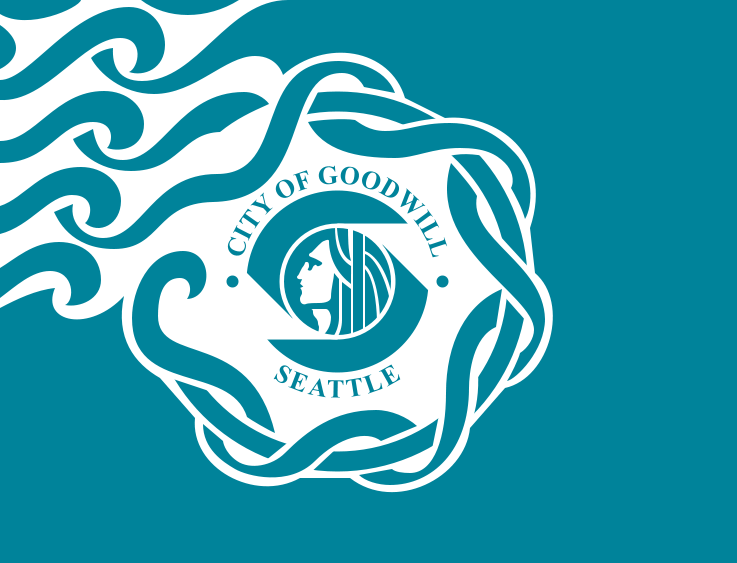

The city of Seattle is 91.5685 square miles in size. This includes 88.4997 square miles of land area and 3.0688 square miles of water area. This figure was compiled by the Seattle Engineering Department and is included in the department's official history, Public Works in Seattle. The book notes that the "area includes all water areas between the north and south City Limits from the Pierhead Line on Puget Sound to the Pierhead Line on Lake Washington. Annexed water areas outside these lines are not included.
FLAG OF SEATTLE

The city of Seattle has one of the ugliest flags in the United States. It shows a logo and some moto on the flag, which is a terrible thing to do in flag design. The flag was designed by Councilmember Paul Kraabel. The Resolution called for a white and teal blue/green flag with a stylized portrait of Chief Sealth ringed by the words Seattle, City of Goodwill and undulating white lines, representing the waves in Puget Sound flowing from the center to the left edge. Only three copies of the flag were made.